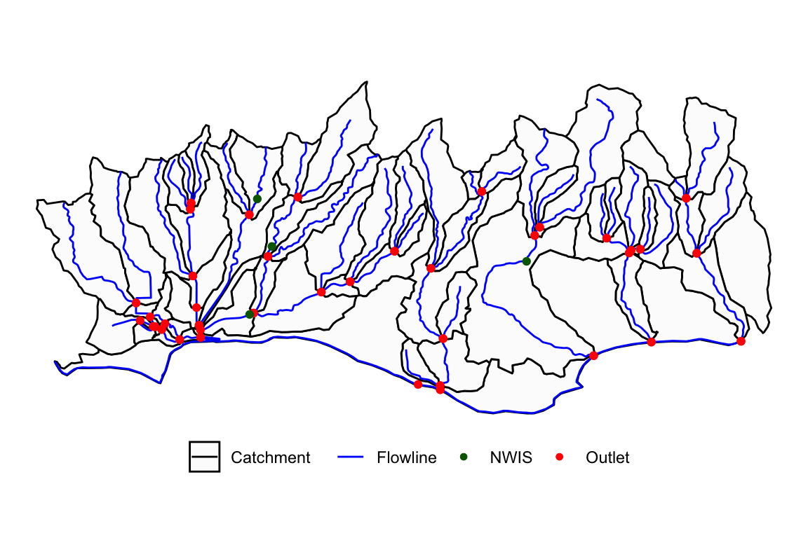
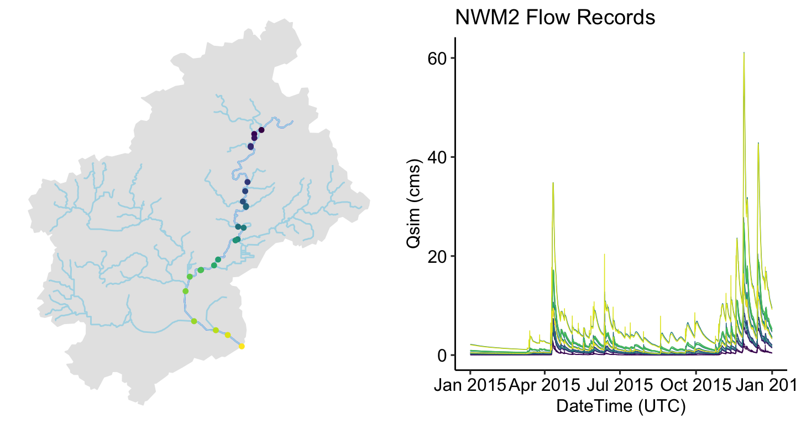

The NWM reanalysis product is indexed by feature ID. Identifying ID’s is not always easy. nwmHistoric provides tools to identify NHD and NWIS IDs using spatial constraints.
NHD COMIDs can be determined from point locations as the NHD catchment containing the requested point. discover_nhd can help find the NHDPlus catchment containing a defined point:
library(AOI) library(nwmHistoric) # Create POINT object by geocoding "Goleta" (pt = AOI::geocode("Goleta", pt = T)) #> Simple feature collection with 1 feature and 1 field #> geometry type: POINT #> dimension: XY #> bbox: xmin: -119.8276 ymin: 34.43583 xmax: -119.8276 ymax: 34.43583 #> CRS: EPSG:4269 #> request geometry #> 1 Goleta POINT (-119.8276 34.43583) # Find COMID (id = discover_nhd(pt)) #> [1] 17595383
discover_nhd can also accept polygon features as a search constraint, and will return all NHD catchments contained in or intersecting the input polygon using the National Water Census Geoserver.
# Goleta footprint (AOI = AOI::aoi_get("Santa Barbara")) #> Simple feature collection with 1 feature and 1 field #> geometry type: POLYGON #> dimension: XY #> bbox: xmin: -119.8598 ymin: 34.33603 xmax: -119.6399 ymax: 34.46392 #> CRS: EPSG:4326 #> geometry request #> 1 POLYGON ((-119.8598 34.3360... Santa Barbara # Find COMIDS (ids = discover_nhd(AOI)) #> [1] 17595287 17595449 17595279 17596125 17596119 17596117 17596115 #> [8] 17596149 17595427 17595405 17596109 17595429 17595393 17596111 #> [15] 17595395 17595361 17595357 17596113 17595277 17596193 17596187 #> [22] 17596197 17596185 17596183 948060316 17596101 17596103 17596099 #> [29] 17596139 17595439 17596123 17595275 17595307 17595305 17595331 #> [36] 17595341 17595335 17596131 17595315 17595343 17595409 17596155 #> [43] 17595401 17595467 17596135 17596143 17596107 17595383 17595407 #> [50] 17595351 17595283 17596097 17596151 17595367 17596147 17596141 #> [57] 17595425 17595369 17595411 17596145 17596153 17596127 17595281 #> [64] 17595453 17596129 17595313 17595447 17595337 17595333 17595339 #> [71] 17595345 17595289 17596211 17595459
Analogous functionality for finding USGS NWIS site IDs is provided with discover_nwis. This function only returns NWIS sites that record streamflow (USGS parameter code ‘00060’) and are collocated with an NHD catchment represented in the NWM.
(nwis = discover_nwis(AOI)) #> Simple feature collection with 4 features and 5 fields #> geometry type: POINT #> dimension: XY #> bbox: xmin: -119.8118 ymin: 34.42472 xmax: -119.7118 ymax: 34.45916 #> CRS: EPSG:4269 #> agency_cd site_no station_nm site_type #> 1 USGS 11120000 ATASCADERO C NR GOLETA CA ST #> 2 USGS 11120500 SAN JOSE C NR GOLETA CA ST #> 3 USGS 11119940 MARIA YGNACIO C A UNIVERSITY DRIVE NR GOLETA CA ST #> 4 USGS 11119745 MISSION C A ROCKY NOOK PARK A SANTA BARBARA CA ST #> geometry comid #> 1 POINT (-119.8118 34.42472) 17595429 #> 2 POINT (-119.809 34.45916) 17596109 #> 3 POINT (-119.8037 34.445) 17596111 #> 4 POINT (-119.7118 34.44055) 17595453
The NHDPlusV2 data model loosely conforms to the HY_Features Conceptual Model with a mapping shared here. nwmHistoric extends the ability of discover_nhd to retrieve catchment-divide, flowline, and outlet represnetations of a COMID.
# Return catchments catch = discover_nhd(AOI, feature = "catchment") # Return flowlines fl = discover_nhd(AOI, feature = "flowline") # Return outlets out = discover_nhd(AOI, feature = "outlet")

Lets look at one integrative example. The aim is to identify a self-contained (e.g watershed) catchment and extract reanalysis records along the mainstem for 2015. The nhdplusTools package provides an interface to the Network Linked Data Index which allow users to define a starting point (as a USGS siteID or NHDPlus COMID), and traverse the hydrographic network to find the upstream (or downstream) geometries and indexed elements.
Here we use the NLDI to trace the upstream network and the nwmHistoric to extract the relevant streamflow forecasts.
library(nhdplusTools) # Start with a nwis site ID nldi_feature <- list("nwissite", "USGS-05428500") # Find the Upper Mainstem um <- navigate_nldi(nldi_feature, mode = "UM") # Find 2015 Flows along the Mainstem nldi_flows <- readNWMdata(comid = um$nhdplus_comid, startDate = "2015-01-01", endDate = "2015-12-31") # For visualization we also retrieve the upper tributary and basin boundary ut <- navigate_nldi(nldi_feature, mode = "UT") basin <- get_nldi_basin(nldi_feature)
